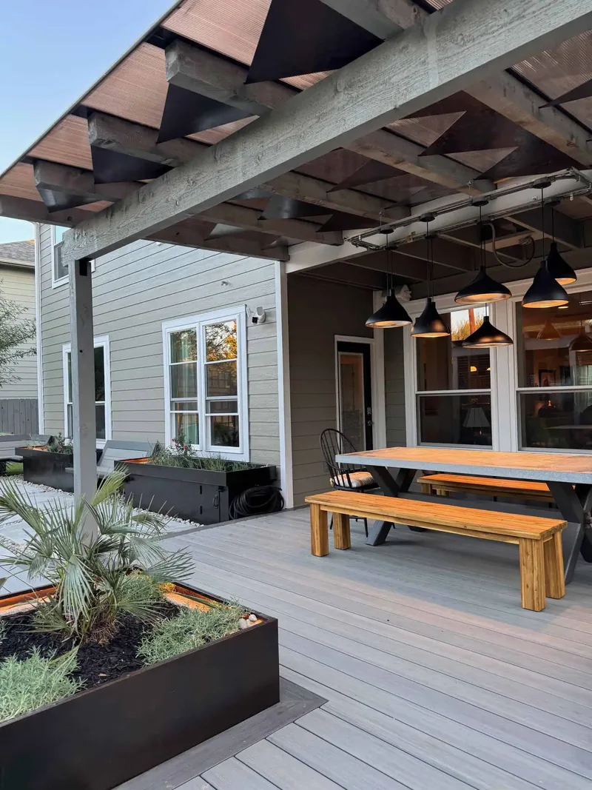

IPE is the hardest and most decay-resistant wood, Western red cedar is far softer and needs stain or sealer every two to three years, and composite needs no staining and runs hot in direct sun. For an Austin deck we recommend IPE for the main deck, composite where the deck is shaded, and cedar where you want real wood and accept the upkeep. Red Agave Landscape builds decks in all three in Austin, TX: IPE, Western red cedar, and Trex and TimberTech composite, on mild steel frames. The ratings below come from the USDA Forest Products Laboratory, the Western Red Cedar Lumber Association, and the makers’ own pages. The sources are listed at the end.
IPE vs Cedar vs Composite: How Do They Compare?
Side by side, on the points that can be measured. Prices for IPE and composite are in the next table, and cedar pricing is in our guide to the best deck materials for Austin.
| Category | IPE | Western Red Cedar | Composite (Trex / TimberTech) |
|---|---|---|---|
| What it is | Imported hardwood | Softwood grown in the United States | Wood fiber and plastic under a protective cap |
| Side hardness | 3,680 lbf | 350 lbf | Not a solid wood |
| Heartwood decay resistance | Very resistant | Resistant | Does not rot |
| Upkeep | Oil once a year to hold the brown, or let it weather to silver | Stain or seal every 2 to 3 years, or let it weather to silver grey | Soap and water. No staining or painting |
| Fasteners | Hidden fasteners | Stainless steel, aluminum, or hot-dipped galvanized | Hidden fasteners |
| Lifespan (our figures) | 50 to 75+ years | 15 to 20 years | 25 to 30 years |
| Our frame | Mild steel | Mild steel | Mild steel |
The hardness and decay ratings are from the USDA Forest Products Laboratory’s Wood Handbook. Hardness is side hardness at 12 percent moisture content.
Where Does Cedar Fit Between IPE and Composite?
Cedar is the real wood that is easy to work and needs the most care. The USDA Forest Products Laboratory’s Wood Handbook lists the side hardness of western redcedar at 350 pounds-force and ipe at 3,680, so ipe is about ten times as hard. Cedar dents more easily than IPE or composite.
On rot, the handbook’s table of decay resistance groups ipe heartwood as very resistant and western redcedar heartwood as resistant. It cautions that the ratings do not hold as well for wood in contact with the ground or in warm, humid climates.
The Western Red Cedar Lumber Association says cedar is naturally resistant to rot, decay, and insects, and that it is a low-density wood that does not absorb and hold heat the way synthetic boards do. It calls for stainless steel, aluminum, or hot-dipped galvanized fasteners, because the tannins in cedar stain around unprotected steel. Left unfinished, cedar weathers to a silver grey. A stain holds its color, and cedar in Austin needs stain or sealer every two to three years.
IPE vs Composite: Cost, Lifespan, and Heat
| Category | IPE Hardwood | Composite (Trex / TimberTech) |
|---|---|---|
| Material cost (per sq ft) | $10–$25 | $5–$13 |
| Installed cost (per sq ft) | $50–$80 | $30–$55 |
| Lifespan | 50–75+ years | 25–30 years |
| Warranty | 25 yr (structural) | 25–50 yr (varies by line) |
| Heat retention | Moderate — stays cooler | High — can reach 150–170°F |
| Maintenance | Annual oil (optional) | Periodic cleaning |
| Can be refinished | Yes — sand and re-oil | No — once faded, permanent |
| Fade resistance | Weathers to silver (reversible) | Fades over time (irreversible) |
| Splinters | Rare (very dense grain) | None |
| Fire rating | Class A | Class B–C (varies) |
| Janka hardness | 3,680 lbf | N/A (not solid wood) |
| Rot / insect resistance | Natural — no treatment needed | Immune (no wood to rot) |
| Scratch resistance | Excellent (hardest wood available) | Moderate (scratches show on surface) |
On warranties, Trex backs its decking lines with 25-, 35-, and 50-year limited residential warranties, and TimberTech’s composite lines carry 25- and 30-year limited warranties. Trex says its composite is made from 95 percent recycled materials, and TimberTech says up to 85 percent.
The Heat Problem
This is the Austin-specific factor that most national comparisons miss. In July and August, deck surfaces in direct sun can reach dangerous temperatures. How each material performs:
| Material | Surface Temp (direct sun, July) | Barefoot Comfort |
|---|---|---|
| IPE (oiled, medium brown) | 120–140°F | Hot but tolerable briefly |
| IPE (silver patina) | 115–135°F | Better — lighter color |
| Composite (dark color) | 150–170°F | Too hot for bare feet |
| Composite (light color) | 130–150°F | Hot — brief contact only |
| Premium composite (AZEK) | 120–140°F | Comparable to IPE |
IPE stays 10–15 degrees cooler than standard composite in the same sun exposure because natural wood has lower thermal mass than the plastic-and-wood-fiber mixture in composite boards. If you are building a pool deck or an unshaded dining area where people walk barefoot, this temperature difference matters.
The solution for either material: add a shade structure. A steel pergola or pavilion over the deck drops the surface temperature 20–30 degrees and makes any decking material comfortable.
The makers say it in their own words. Trex says its decking gets hot in direct sun on hot days, that darker colors feel hotter, and that buyers in hotter climates should choose lighter colors. TimberTech says composite decking warms under direct sunlight, and it tells buyers to choose lighter tones or build shaded areas into the design. Austin gives every board a long test: the National Weather Service puts the 1991 to 2020 average at 29 days a year at 100 degrees or hotter, and it counted 80 of them in 2023.
Which Decking Did We Use in Circle C?
Composite, under a pergola. In Circle C we laid composite decking over an old flagstone patio in one plane. Above it we kept the yard’s worn pergola, reframed it, and capped it with custom-cut steel triangles that throw shadows across the deck. A boulder fire pit is set into the deck steps, and steel planters with built-in lighting line the edge.

That is the rule on this page at work: put composite where there is shade. See the Circle C project and our custom decks service.
Cost Breakdown: 400 sq ft Deck
IPE deck
| Item | Cost |
|---|---|
| IPE decking boards (5/4 × 6) | $5,600–$10,000 |
| Steel or IPE substructure | $3,000–$6,000 |
| Hidden fastener system | $800–$1,200 |
| Concrete footings (pier) | $1,200–$2,400 |
| Installation labor | $8,000–$14,000 |
| Railing (steel cable or IPE) | $2,000–$5,000 |
| Total | $20,600–$38,600 |
Composite deck
| Item | Cost |
|---|---|
| Composite decking boards | $2,400–$5,200 |
| Pressure-treated substructure | $1,600–$3,200 |
| Hidden fastener system | $600–$1,000 |
| Concrete footings (pier) | $1,200–$2,400 |
| Installation labor | $4,000–$8,800 |
| Composite railing system | $1,500–$3,500 |
| Total | $11,300–$24,100 |
IPE costs roughly 1.5–2 times more upfront. But the IPE deck lasts 2–3 times longer, making the cost per year of service lower for IPE.
Cost Per Year of Service
| Metric | IPE | Composite |
|---|---|---|
| Installed cost (400 sq ft) | $28,000 | $17,000 |
| Expected lifespan | 60 years | 27 years |
| Annual maintenance cost | $200 (oiling) | $100 (cleaning) |
| Replacement in 60 years | 0 times | 1 time ($17,000) |
| 60-year total cost | $40,000 | $40,700 |
| Cost per year | $667 | $1,507 (per 27-yr cycle) |
Over a 60-year ownership horizon, the total cost is nearly identical — but you get a natural hardwood deck that can be refinished and restored versus a synthetic surface that must be entirely replaced when it reaches end of life.
Appearance Over Time
IPE: Year 1 through Year 30
- Year 1: Rich, dark brown with deep grain pattern. Stunning
- Year 2–3: If oiled annually, maintains original color. If left natural, begins weathering to silver-gray
- Year 5: Oiled: still rich brown. Natural: uniform silver patina
- Year 10: Either finish looks intentional and aged. Surface still smooth and hard
- Year 20: Silver patina has the look of a boardwalk or marine dock — a character that only real wood develops
- Year 30: Can be sanded back to bare wood and re-oiled to look nearly new. No other decking material offers this
Composite: Year 1 through Year 25
- Year 1: Uniform color, consistent texture. Clean and even
- Year 2–3: Some initial fading (normal, covered by warranty). Mold may appear in grooved boards in shaded areas
- Year 5: Color has settled. Some staining from grills, planters, or furniture may be visible
- Year 10: Noticeable fading compared to a new board. Surface scratches from furniture visible in certain light
- Year 15: Boards beginning to show wear. Some cupping or warping possible in extreme heat
- Year 25: End of warranty period. No refinishing option — replace entire deck or live with the appearance
Maintenance: What Each Actually Requires
IPE annual maintenance
- Required: Sweep debris. Hose down quarterly. That is it
- Optional: Apply IPE oil once per year (spring) to maintain the brown color. This takes a few hours for a 400 sq ft deck. If you skip oiling, the wood weathers to silver — it does not deteriorate, it just changes color
- Every 5–10 years: Light sanding of any surface areas that feel rough (rare with IPE due to its density)
Composite annual maintenance
- Required: Clean with mild soap and water 2–3 times per year. Clear debris from grooved board channels to prevent mold growth
- Required: Remove stains from food, drink, or grease immediately — composite absorbs stains that IPE does not
- Every 1–2 years: Inspect for mold in shaded areas and treat with composite-specific cleaner
- Never: Sand, stain, paint, or seal composite. These damage the capped surface
Composite is marketed as “maintenance-free,” but in Austin’s humid conditions, mold prevention and stain management are real ongoing tasks. IPE’s only optional maintenance — annual oiling — is a choice about color, not structural necessity.
When to Choose IPE
- You are building a deck you plan to keep for 20+ years
- You want a natural material that ages with character
- You are building a pool deck where barefoot heat matters
- You want the option to refinish the surface years from now
- You are building an outdoor kitchen where the deck is the primary living surface
- You value the look and feel of real hardwood over manufactured uniformity
- You are pairing the deck with mild steel elements (pergola, railing, planters) and want materials that age together
When to Choose Cedar
- You want a natural wood deck at a lower cost than IPE
- You do not mind re-staining every two to three years
- The design is complex, and a lighter wood that is easier to work suits it
- You like wood that weathers to a silver grey
When to Choose Composite
- Budget is the primary constraint and you need to minimize upfront cost
- You want guaranteed uniform color and do not want to oil annually
- The deck is in full shade (heat differential is less significant)
- You are building a secondary deck or utility area (mudroom exit, side yard platform) where material character is less important
- You plan to sell the home within 10 years and want the deck to look new at listing
What About Steel Framing?
Regardless of which decking material you choose, consider a steel substructure instead of pressure-treated lumber. A mild steel frame will outlast both decking surfaces — when the composite boards reach end of life in 25 years, you can replace just the boards without rebuilding the frame. With IPE on a steel frame, the entire structure lasts 50+ years with zero substructure concerns.
Red Agave builds deck frames in mild steel — not aluminum, not wood. Steel framing pairs with IPE, cedar, and composite and eliminates the most common failure point in deck construction: the substructure rotting before the surface.
Our Recommendation for Austin
We recommend IPE for primary outdoor living decks — the deck you eat dinner on, the deck around your pool, the deck under your pergola. It stays cooler, lasts longer, looks better with age, and can be restored. We build it on mild steel frames with hidden fasteners and cable railing for a clean, modern profile.
For secondary areas where budget matters more than material character, composite is a practical choice. But even then, we use a steel frame underneath and premium-line composite (not builder-grade) to ensure the deck performs in Austin’s heat.
Western red cedar sits between them. It is the choice when you want real wood at a lower cost than IPE and accept staining every two to three years.
Browse our signature projects to see IPE decks in finished form, then request a free consultation.
What Sources Did We Use?
We read each of these in November 2026.
- USDA Forest Products Laboratory, Wood Handbook (FPL-GTR-282, 2021), Chapter 5: Mechanical Properties of Wood and Chapter 14: Biodeterioration of Wood
- Western Red Cedar Lumber Association, Western Red Cedar Decking
- Trex Company, Composite Decking and Railing FAQs and Composite Decking Boards and Products
- TimberTech, Composite Decking
- National Weather Service, Austin/San Antonio, Austin Area temperature rankings, updated July 2026
Questions We Hear
Which is better for an Austin deck: IPE, cedar, or composite?
IPE is the harder and more decay-resistant of the two woods. Western red cedar is real wood at a lower cost than IPE, and it needs stain or sealer every two to three years. Composite needs no staining, and it runs hot in direct sun. We recommend IPE for a main deck, composite for a shaded deck, and cedar where you want real wood and accept the upkeep.
Is IPE decking worth the cost in Austin?
Yes, if you are building a deck you plan to keep for 20 or more years. IPE costs $50 to $80 per square foot installed versus $30 to $55 for composite, but it lasts 50 to 75 years compared to 25 to 30 for composite. Over its lifetime, IPE costs less per year of service than composite. IPE also stays cooler in direct sun, resists fading better, and can be refinished to look new even after decades. Composite cannot be refinished once it fades or stains. For a permanent outdoor living space, IPE is the better long-term investment.
How hard is IPE compared with cedar?
The USDA Forest Products Laboratory’s Wood Handbook lists the side hardness of ipe at 3,680 pounds-force and western redcedar at 350 pounds-force, both at 12 percent moisture content. Ipe is about ten times as hard.
Does composite decking get hot in Austin?
Yes. Trex says its decking gets hot in direct sun on hot days and that darker colors feel hotter. TimberTech tells buyers to choose lighter tones or build shaded areas into the design. In Circle C we laid composite decking under a pergola.
Does cedar decking rot?
Cedar heartwood resists rot. The USDA Wood Handbook groups western redcedar heartwood as resistant to decay and ipe heartwood as very resistant. The Western Red Cedar Lumber Association calls for stainless steel, aluminum, or hot-dipped galvanized fasteners, and cedar in Austin needs stain or sealer every two to three years.